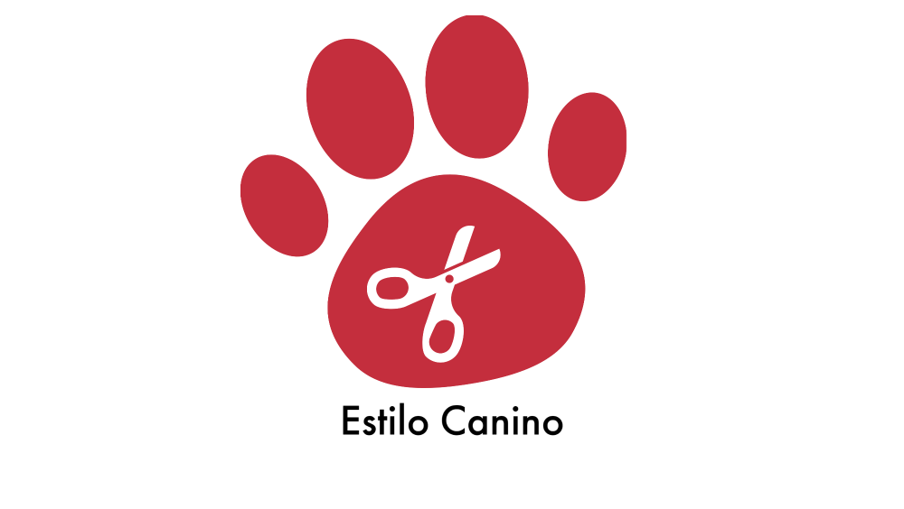
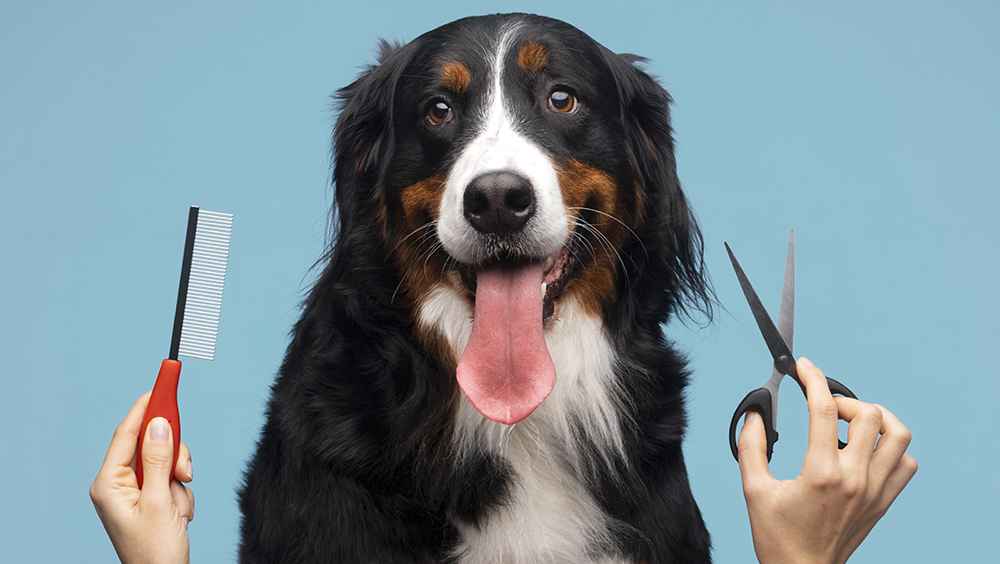
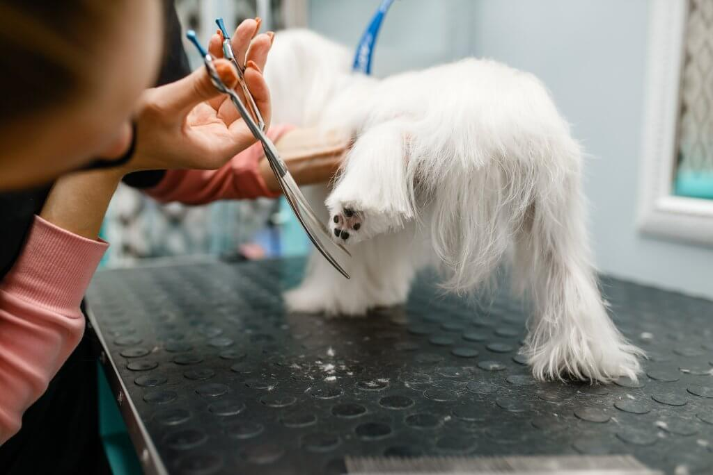

- 
- 

- 
Peluquería canina Estilo Canino
El servicio de corte de pelos y uñas es uno de los servicios principales que ofrece la peluquería canina. Consiste en el recorte y arreglo del pelaje del perro para mantenerlo en un estado óptimo de higiene y apariencia. Esto incluye el corte de pelo en diferentes áreas del cuerpo, como el cuerpo en general, las patas, la cabeza y la cola, de acuerdo con las preferencias del dueño y las necesidades específicas de la raza del perro. Además del corte de pelo, también se lleva a cabo el recorte de uñas, asegurándose de mantenerlas a una longitud adecuada para evitar molestias o lesiones en las patas del perro.
El servicio de baño y lavado de oídos es fundamental para mantener la higiene y el bienestar de los perros. Durante este servicio, se utiliza un champú adecuado para perros, que ayuda a limpiar el pelaje y eliminar la suciedad, los olores indeseables y los posibles parásitos. Además del baño, se presta especial atención a la limpieza de los oídos del perro. Se utilizan productos suaves y seguros para eliminar la acumulación de cera y suciedad, evitando así posibles infecciones o molestias en los oídos del animal. Este servicio contribuye a mantener una piel y pelaje saludables, y a prevenir problemas relacionados con la suciedad y la humedad en los oídos.
El servicio completo es una opción que ofrece la peluquería canina para aquellos dueños que desean un cuidado integral para sus perros. Este servicio incluye una combinación de los servicios mencionados anteriormente, como el corte de pelos y uñas, el baño y lavado de oídos, y puede incluir otros servicios adicionales según las necesidades del perro y las preferencias del dueño. Esto puede incluir, por ejemplo, el cepillado dental, la limpieza de glándulas anales, el desparasitado externo, entre otros. El servicio completo proporciona una solución completa de cuidado y aseo para los perros, garantizando que se vean y se sientan bien, y ayudando a mantener su salud y bienestar general.